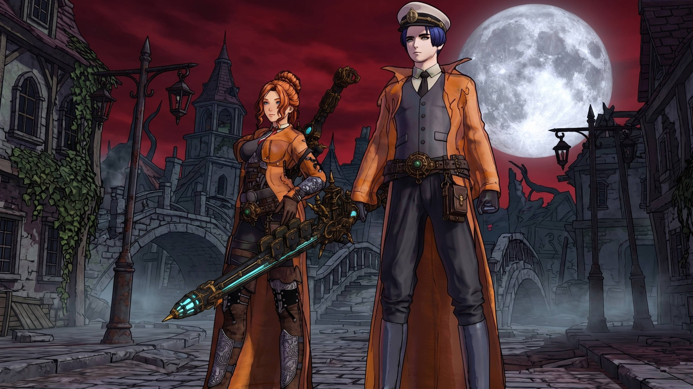
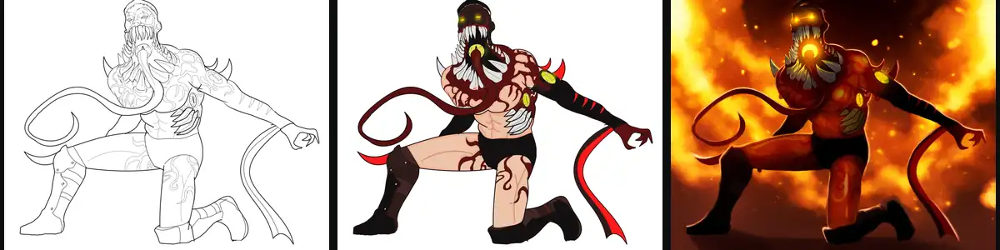
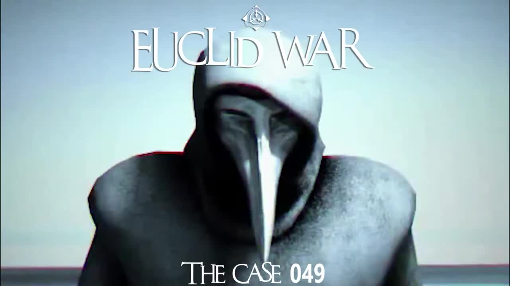

01 / 3D & CINEMATIC
Character art, scenes and animation ↗
3D characters, costume variations, cinematic framing, scene composition and motion studies.
Separate project collection · Costa Rica
3D environments and characters, illustration, commercial videos, interactive storytelling and game experiments. Preserved independently from the Unity gameplay programming portfolio.

3D characters, costume variations, cinematic framing, scene composition and motion studies.

Character illustration and selected development work.
Branded pieces, action teasers and animated promotional clips, with embedded playback.
World-building, reactive adventure and experimental card combat.

First-person mystery prototype with exploration, interactions, dialogue and narrative progression.
Structured fantasy setting, places, characters and world reference.
This site preserves work that no longer appears on the primary Unity programming homepage. Existing project pages and media remain intact.
BACK TO UNITY / C# PORTFOLIO ↗